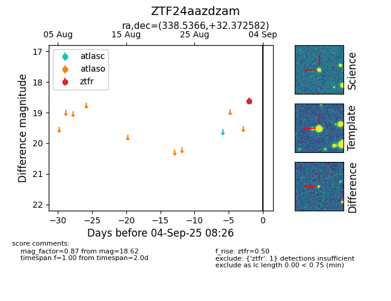

FINK: ZTF24aazdzam
Lasair: ZTF24aazdzam
ALeRCE: ZTF24aazdzam
ZTF24aazdzam (ztf,fink)
equatorial (ra, dec) = (338.5366,+32.37258)
galactic (l, b) = (91.9959,-22.12572)

last ztfr=18.62
1 ztfr detections